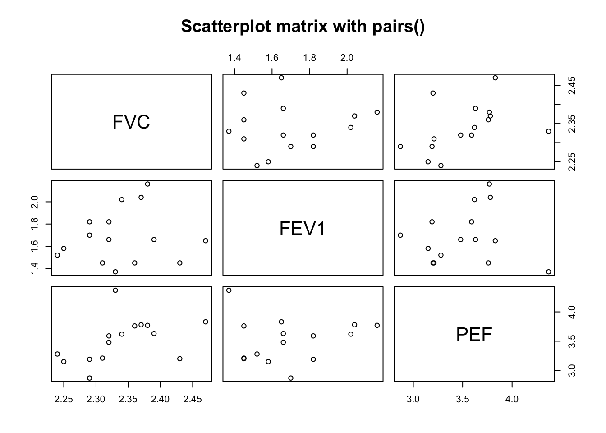
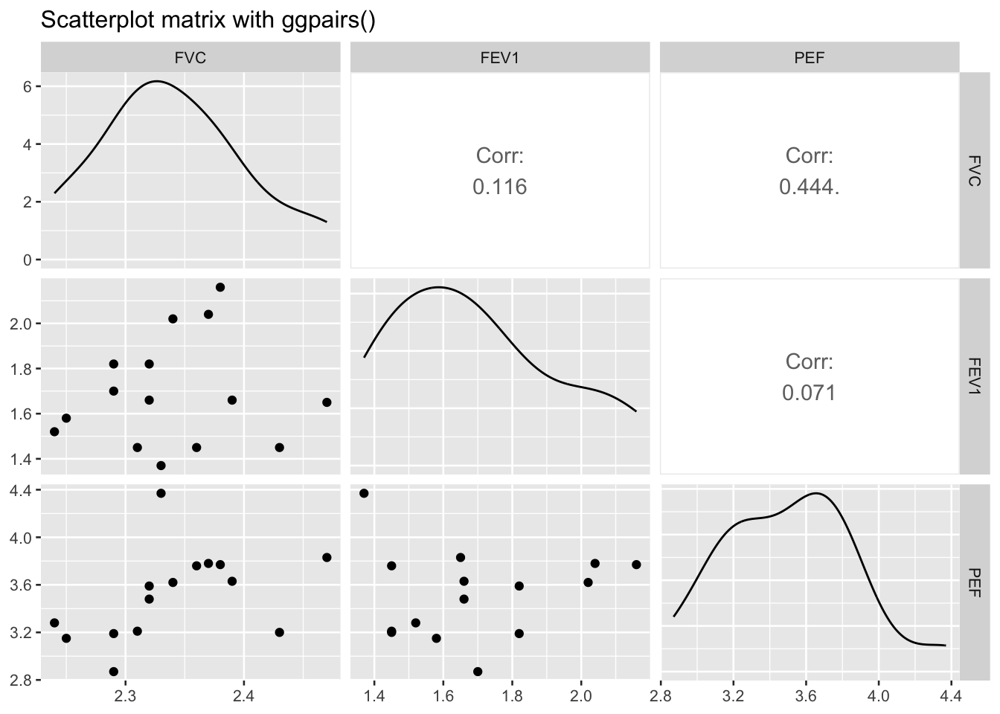
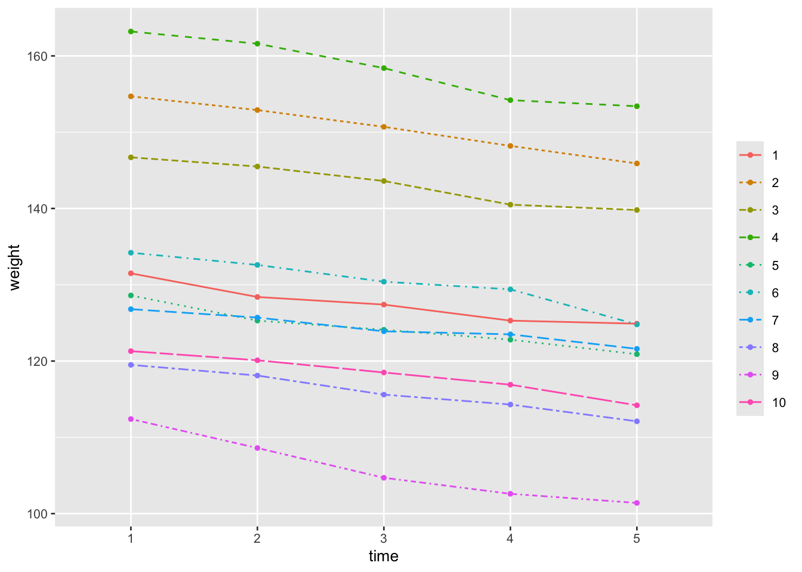

library(tidyverse)
library(GGally)
library(DescTools)
library(emmeans)
library(nlme)17 Multivariate data
Multivariate data usually refers to data involving more than one variable, but here specially refers to datasets where there are multiple outcome or response variables (also called dependent variables) that are measured simultaneously for each observation or experimental unit. This type of data is common in many fields such as psychology, medicine, biology, and social sciences, where researchers want to study how one or more predictors (independent variables) affect multiple outcomes.
17.1 Prerequisite
17.2 Descriptive statistics
Descriptive statistics for multivariate data help summarize the properties of several variables simultaneously. Some key statistics include:
17.2.1 Mean vector
The mean vector is a multivariate extension of the concept of a mean in univariate statistics. It provides the average or central value for each variable in a multivariate dataset. For multiple variables, it is represented as a vector:
\mu = (\mu_1, \mu_2, \dots, \mu_p)
where p is the number of variables.
17.2.2 Deviation matrix
The deviation matrix (also known as the mean deviation matrix or matrix of deviations) is a matrix that represents how much each observation in a dataset deviates from the mean of the corresponding variable. It is often used in multivariate data analysis as a step before calculating other statistics, like the covariance matrix.
If the dataset is represented by the matrix \mathbf{X} with n rows (observations) and p columns (variables), and v is the mean vector of the variables, the deviation matrix \mathbf{D} is calculated as:
\mathbf{D} = \mathbf{X} - \mathbf{1} \mu^T
where \mathbf{X} is the n \times p data matrix, \mathbf{1} is an n \times 1 column vector of ones, \mu^T is the 1 \times p mean vector transposed to match the dimensions, \mathbf{D} is the n \times p deviation matrix.
17.2.3 Covariance matrix
The covariance matrix describes the relationships between pairs of variables in a dataset. It captures how much two variables change together (covary) and generalizes the concept of variance (which measures how much a single variable varies) to multiple variables. The covariance matrix \mathbf{S} contains variances on the diagonal and covariances off-diagonal:
\mathbf{S} = \begin{pmatrix}S_{11} & S_{12} & \cdots & S_{1p} \\S_{21} & S_{22} & \cdots & S_{2p} \\\vdots & \vdots & \ddots & \vdots \\S_{p1} & S_{p2} & \cdots & S_{pp}\end{pmatrix}
Where S_{ii} is the variance of the i-th variable, S_{ij} (for i \neq j) is the covariance between the i-th and j-th variables.
The covariance between X_i and X_j is calculated as:
S_{ij} = \frac{1}{n-1} \sum_{k=1}^{n} (X_{ik} - \bar{X}_i)(X_{jk} - \bar{X}_j)
where n is the number of observations, X_{ik} and X_{jk} are the k -th observations of the variables X_i and X_j, respectively, \bar{X}_i and \bar{X}_j are the means of the variables X_i and X_j.
17.2.4 Correlation matrix
The correlation matrix provides the pairwise correlation coefficients between variables in a dataset. It is a normalized version of the covariance matrix, giving a measure of how strongly variables are linearly related, with values ranging from -1 to 1.
For a dataset with p variables, the correlation matrix is a p \times p matrix where each element r_{ij} represents the correlation coefficient between the i -th andj -th variables. The diagonal elements are always 1, as a variable is perfectly correlated with itself.
Mathematically, the correlation matrix R is:
R = \begin{pmatrix} 1 & r_{12} & r_{13} & \dots & r_{1p} \\ r_{21} & 1 & r_{23} & \dots & r_{2p} \\ r_{31} & r_{32} & 1 & \dots & r_{3p} \\ \vdots & \vdots & \vdots & \ddots & \vdots \\ r_{p1} & r_{p2} & r_{p3} & \dots & 1 \end{pmatrix}
where r_{ij} is the Pearson correlation coefficient between variable i and variable j, defined as:
r_{ij} = \frac{\text{Cov}(X_i, X_j)}{\sigma_{X_i} \sigma_{X_j}}
\text{Cov}(X_i, X_j) is the covariance between X_i and X_j, \sigma_{X_i} and\sigma_{X_j}are the standard deviations of X_i and X_j, respectively.
17.2.5 Scatterplot matrix
A scatterplot matrix (also called a pairs plot) is a grid of scatterplots that visually represents the relationships between pairs of variables in a multivariate dataset. It is particularly useful for examining potential correlations or patterns among multiple variables simultaneously.
For a dataset with p variables, a scatterplot matrix will contain a p \times p grid of plots, where the plot in the i -th and j -th column displays a scatterplot of the i -th variable versus the j -th variable. The diagonal often shows the distribution of each variable, typically as a histogram or a density plot. Each off-diagonal plot shows the relationship (scatterplot) between two variables, helping identify patterns like linearity, clusters, or outliers.
Example 1:
Pulmonary function measurements were performed on 15 patients with acute lower respiratory tract infections admitted to the respiratory department of a hospital. The measurements included forced vital capacity (FVC), forced expiratory volume in the first second (FEV1), and peak expiratory flow (PEF). Please perform a multivariate description of these three response variables.
df <- read_csv("datasets/ex17-01.csv", show_col_types = F) |>
select(FVC, FEV1, PEF)Mean vector:
You can easily calculate a correlation matrix using the colMeans() function:
colMeans(df)#> FVC FEV1 PEF
#> 2.339333 1.690000 3.515333Covariance matrix:
You can easily calculate a correlation matrix using the cov() function:
cov(df)#> FVC FEV1 PEF
#> FVC 0.003949524 0.001750000 0.010432381
#> FEV1 0.001750000 0.057557143 0.006414286
#> PEF 0.010432381 0.006414286 0.139926667Correlation matrix:
You can easily calculate a correlation matrix using the cor() function:
cor(df) #> FVC FEV1 PEF
#> FVC 1.0000000 0.11606895 0.44377295
#> FEV1 0.1160690 1.00000000 0.07147406
#> PEF 0.4437729 0.07147406 1.00000000Scatterplot matrix
Tools like pairs() in base R or ggpairs() in GGally can generate scatterplot matrices for visual exploration of data relationships.
pairs(df, main = "Scatterplot matrix with pairs()")
ggpairs(df, title = "Scatterplot matrix with ggpairs()")
17.2.6 Multivariate normal distribution
Multivariate normal distribution (also known as multivariate Gaussian distribution) is a generalization of the univariate normal distribution to multiple dimensions. It describes a set of p-dimensional random variables, where each variable is normally distributed and their joint distribution follows a normal pattern.
A random vector \mathbf{X} = (X_1, X_2, \dots, X_p)^T is said to follow a multivariate normal distribution if every linear combination of its components is normally distributed. It is denoted as:
\mathbf{X} \sim \mathcal{N}(\boldsymbol{\mu}, \boldsymbol{\Sigma})
where \boldsymbol{\mu} = (\mu_1, \mu_2, \dots, \mu_p)^T is the mean vector, representing the expected values of the variables, \boldsymbol{\Sigma} is the p \times p covariance matrix, representing the variances of and covariances between the variables.
The probability density function of a multivariate normal distribution is given by:
f(\mathbf{X}) = \frac{1}{(2\pi)^{p/2} |\boldsymbol{\Sigma}|^{1/2}} \exp\left( -\frac{1}{2} (\mathbf{X} - \boldsymbol{\mu})^T \boldsymbol{\Sigma}^{-1} (\mathbf{X} - \boldsymbol{\mu}) \right)
where \mathbf{X} is the p-dimensional vector of variables, \boldsymbol{\Sigma} is the determinant of the covariance matrix, \boldsymbol{\Sigma}^{-1} is the inverse of the covariance matrix.
17.3 Comparison of differences between groups
When comparing differences between groups with multivariate data, we deal with situations where there are multiple dependent variables or outcomes that need to be analyzed simultaneously. Traditional univariate methods (such as t-tests or ANOVA) only test differences for one outcome variable at a time. For multivariate data, we use techniques that account for the interrelationships between the multiple outcomes.
Here are the common methods for comparing group differences with multivariate data:
17.3.1 Hotelling’s T² test: one-sample
Hotelling’s T² test is the multivariate extension of the univariate t-test. It can be used in two different contexts: one-sample and two-sample. Both tests are multivariate versions of t-tests, designed for situations where there are multiple dependent variables.
For one-sample, it tests whether the sample’s mean vector differs from a known mean vector. The hypothesis tested is:
- H_0: The mean vector of the sample is equal to the known mean vector.
- H_1: The mean vector of the sample is different from the known mean vector.
Let \mathbf{X} be the sample data matrix of n observations and p variables. The mean vector \bar{\mathbf{X}} is compared to a hypothesized mean vector \mathbf{\mu}_0. The test statistic is given by:
T^2 = n (\bar{\mathbf{X}} - \mathbf{\mu}_0)^{\prime} \mathbf{S}^{-1} (\bar{\mathbf{X}} - \mathbf{\mu}_0)
where n is the sample size, \bar{\mathbf{X}} is the sample mean vector, \mathbf{S} is the sample covariance matrix, \mathbf{\mu}_0 is the hypothesized mean vector.
Under the null hypothesis, the test statistic T^2 follows an F-distribution after scaling:
F = \frac{(n - p)}{p(n - 1)} T^2 \sim F(p, n - p)
where p is the number of variables (dimensions) in the data.
Example 2:
In a battery factory, 15 workers engaged in lead-related tasks were randomly selected for measurement of liver function indicators, including alanine aminotransferase (ALT), aspartate aminotransferase (AST), and gamma-glutamyl transferase (GGT). It is known that the mean values for ALT, AST, and GGT in the general population in that area are 23.9 U/L, 25.7 U/L, and 26.7 U/L, respectively. The question is whether the liver function of the lead-exposed workers differs from that of the normal population.
df <- read_csv("datasets/ex17-02.csv", show_col_types = F)To perform a one-sample Hotelling’s T² test, you can use the HotellingsT2Test() function from the DescTools package.
normal_mean <- matrix(c(23.9, 25.7, 26.7), nrow = 3)
df |>
HotellingsT2Test(mu = normal_mean)#>
#> Hotelling's one sample T2-test
#>
#> data: df
#> T.2 = 5.3391, df1 = 3, df2 = 12, p-value = 0.01439
#> alternative hypothesis: true location is not equal to c(23.9,25.7,26.7)The results show that the Hotelling’s T² statistic is 5.3391, p-value is 0.01439, less than 0.05, reject the null hypothesis. This suggest that the liver function (ALT, AST, and GGT) of the lead-exposed workers is different from the normal population values ([23.9, 25.7, 26.7]), implying a potential impact of lead exposure on the workers’ liver function.
17.3.2 Hotelling’s T² test: two-sample
For two groups, it tests whether the mean vectors of two independent samples are equal. The hypothesis tested is:
- H_0: The mean vectors of the two groups are equal: \boldsymbol{\mu}_1 = \boldsymbol{\mu}_2.
- H_1: The mean vectors of the two groups are not equal: \boldsymbol{\mu}_1 \neq \boldsymbol{\mu}_2.
The test statistic for Hotelling’s T^2 is computed similarly to a multivariate version of the t-test. When comparing two independent groups with sample sizes n_1 and n_2, and sample mean vectors \bar{\mathbf{X}}_1 and \bar{\mathbf{X}}_2, the test statistic is:
T^2 = \frac{n_1 n_2}{n_1 + n_2} (\bar{\mathbf{X}}_1 - \bar{\mathbf{X}}_2)^{\prime} \mathbf{S}_p^{-1} (\bar{\mathbf{X}}_1 - \bar{\mathbf{X}}_2)
where \mathbf{S}_p is the pooled covariance matrix.
Specifically, the Hotelling’s T^2 statistic can be transformed into an F-statistic as:
F = \frac{(n_1 + n_2 - p - 1) T^2}{(n_1 + n_2 - 2)p}
where p is the number of variables.
F follows an F-distribution with p and n_1 + n_2 - p - 1 degrees of freedom under the null hypothesis.
Example 3:
A hospital conducted a study to investigate the therapeutic effect of drug A on heart failure. 20 heart failure patients were randomly divided into two groups: one group received standard treatment, while the other group received drug A in addition to the standard treatment. The post-treatment heart function indicators, left ventricular ejection fraction (LVEF) and the 6-minute walk test (6MWT) were measured. It is known that lower values of LVEF and 6MWT indicate more severe heart function impairment. The question is whether drug A is effective in treating heart failure.
df <- read_csv("datasets/ex17-03.csv", col_types = list(group = col_factor()))The HotellingsT2Test() function from DescTools package is used to perform Hotelling’s T² test for two groups.
HotellingsT2Test(cbind(LVEF, MWT) ~ group, data = df)#>
#> Hotelling's two sample T2-test
#>
#> data: cbind(LVEF, MWT) by group
#> T.2 = 1.29, df1 = 2, df2 = 17, p-value = 0.3009
#> alternative hypothesis: true location difference is not equal to c(0,0)An alternative method is using the manova() function to perform multivariate ANOVA, just as univariate two-sample mean difference can be tested either by t-test or ANOVA.
manova(cbind(LVEF, MWT) ~ group, data = df) |>
summary(test = "Wilks")- 1
- This provides a summary of the MANOVA results using Wilks’ Lambda as the test statistic.
#> Df Wilks approx F num Df den Df Pr(>F)
#> group 1 0.86823 1.29 2 17 0.3009
#> Residuals 18In this case, the p-value is 0.3009, which is higher than the significance level of 0.05, not reject the null hypothesis. There is no significant evidence to suggest that drug A has a effect on improving heart function (as measured by LVEF and 6MWT) when compared to standard treatment alone.
17.3.3 MANOVA for multiple groups
MANOVA (Multivariate analysis of variance) is an extension of ANOVA that allows for comparing the mean vectors of multiple groups across several dependent variables while considering the correlation between them.
Example 4:
The children with chronic gastritis were randomly divided into 3 groups, with group I and group II as treatment groups, and another group serving as the control. The aim is to compare the effect of the treatment drugs on T-cell immune function (percentages of peripheral blood T3, T4, and T5 cells).
df <- read_csv("datasets/ex17-04.csv", col_types = list(group = col_factor()))
df |>
group_by(group)|>
summarise_all(.funs = list(mean = mean))#> # A tibble: 3 × 4
#> group t3_mean t4_mean t8_mean
#> <fct> <dbl> <dbl> <dbl>
#> 1 1 62.3 31.8 30.8
#> 2 2 42.5 20.1 17.4
#> 3 3 73.2 38.1 33.7Use the manova() function to test whether the treatment drugs have a significant effect on T-cell immune function.
model <- manova(cbind(t3, t4, t8) ~ group, data = df)
summary(model, test = "Wilks")#> Df Wilks approx F num Df den Df Pr(>F)
#> group 2 0.088735 5.4997 6 14 0.004104 **
#> Residuals 9
#> ---
#> Signif. codes: 0 '***' 0.001 '**' 0.01 '*' 0.05 '.' 0.1 ' ' 1The MANOVA results indicate the following:
- Wilks’ Lambda (0.088735): This is a test statistic used in multivariate analysis of variance. A lower Wilks’ Lambda value indicates that the group differences explain a large portion of the variance in the dependent variables (T3, T4, T8). In this case, the value is relatively low, which suggests that the groups differ significantly in the combined T-cell percentages.
- Approximate F-statistic (5.4997): The F-value is used to determine whether the differences between the groups’ means are statistically significant. A larger F-value typically suggests stronger evidence against the null hypothesis (i.e., no difference between groups).
- Degrees of Freedom (num Df = 6, den Df = 14): num Df refers to the numerator degrees of freedom, associated with the number of dependent variables and groups. den Df refers to the denominator degrees of freedom, related to the residuals or error in the model.
- P-value: This is the most critical value for interpreting the test. A p-value of 0.004104 indicates that there is a statistically significant difference in the combined T-cell immune function measurements (T3, T4, and T8 cell percentages) between the groups at the 0.05 significance level.
Since the p-value is significant (0.004104), we can reject the null hypothesis and conclude that the treatments have a significant impact on the T-cell immune function across the groups. To determine which specific variables (T3, T4, or T8) are driving these differences, you can run follow-up univariate ANOVAs for each dependent variable.
# Univariate ANOVA
df |>
select(t3, t4, t8) |>
lapply(\(x) aov(x ~ group, data = df)) |>
map(summary)#> $t3
#> Df Sum Sq Mean Sq F value Pr(>F)
#> group 2 2110.0 1055.0 32.55 7.58e-05 ***
#> Residuals 9 291.7 32.4
#> ---
#> Signif. codes: 0 '***' 0.001 '**' 0.01 '*' 0.05 '.' 0.1 ' ' 1
#>
#> $t4
#> Df Sum Sq Mean Sq F value Pr(>F)
#> group 2 727.7 363.9 8.72 0.00783 **
#> Residuals 9 375.5 41.7
#> ---
#> Signif. codes: 0 '***' 0.001 '**' 0.01 '*' 0.05 '.' 0.1 ' ' 1
#>
#> $t8
#> Df Sum Sq Mean Sq F value Pr(>F)
#> group 2 638.0 319.0 14.81 0.00142 **
#> Residuals 9 193.9 21.5
#> ---
#> Signif. codes: 0 '***' 0.001 '**' 0.01 '*' 0.05 '.' 0.1 ' ' 1Another convenient tool is summary.aov(), which can extract the univariate ANOVAs directly from the model for each dependent variable.
summary.aov(model)#> Response t3 :
#> Df Sum Sq Mean Sq F value Pr(>F)
#> group 2 2110.01 1055.00 32.553 7.582e-05 ***
#> Residuals 9 291.68 32.41
#> ---
#> Signif. codes: 0 '***' 0.001 '**' 0.01 '*' 0.05 '.' 0.1 ' ' 1
#>
#> Response t4 :
#> Df Sum Sq Mean Sq F value Pr(>F)
#> group 2 727.70 363.85 8.7197 0.007833 **
#> Residuals 9 375.55 41.73
#> ---
#> Signif. codes: 0 '***' 0.001 '**' 0.01 '*' 0.05 '.' 0.1 ' ' 1
#>
#> Response t8 :
#> Df Sum Sq Mean Sq F value Pr(>F)
#> group 2 638.04 319.02 14.807 0.001425 **
#> Residuals 9 193.91 21.55
#> ---
#> Signif. codes: 0 '***' 0.001 '**' 0.01 '*' 0.05 '.' 0.1 ' ' 1This will give you the individual ANOVA tables for each dependent variable. If any of these ANOVAs are significant, you should conduct post-hoc pairwise comparisons to see which two groups are significantly different.
df |>
select(t3, t4, t8) |>
lapply(\(x) aov(x ~ group, data = df)) |>
map(~ TukeyHSD(.))#> $t3
#> Tukey multiple comparisons of means
#> 95% family-wise confidence level
#>
#> Fit: aov(formula = x ~ group, data = df)
#>
#> $group
#> diff lwr upr p adj
#> 2-1 -19.74167 -31.8813782 -7.601955 0.0036024
#> 3-1 10.95333 -0.6544511 22.561118 0.0638950
#> 3-2 30.69500 20.0325691 41.357431 0.0000567
#>
#>
#> $t4
#> Tukey multiple comparisons of means
#> 95% family-wise confidence level
#>
#> Fit: aov(formula = x ~ group, data = df)
#>
#> $group
#> diff lwr upr p adj
#> 2-1 -11.708333 -25.483127 2.06646 0.0957183
#> 3-1 6.306667 -6.864555 19.47789 0.4114644
#> 3-2 18.015000 5.916460 30.11354 0.0062399
#>
#>
#> $t8
#> Tukey multiple comparisons of means
#> 95% family-wise confidence level
#>
#> Fit: aov(formula = x ~ group, data = df)
#>
#> $group
#> diff lwr upr p adj
#> 2-1 -13.458333 -23.356374 -3.560293 0.0106483
#> 3-1 2.906667 -6.557671 12.371004 0.6787514
#> 3-2 16.365000 7.671451 25.058549 0.0013602This method performs pairwise comparisons on each response variable independently, which can be simpler but loses the multivariate aspect.
Hotelling’s T² test is a multivariate generalization of the t-test for comparing mean vectors. Here we define a customized function named pairs.hotellings.T2.test() to perform pairwise comparisons of the multivariate means between groups.
# Define the pairwise_hotelling function
pairs.hotellings.T2.test <- function(formula, data, p.adjust.method = p.adjust.methods) {
vars <- all.vars(formula[[2]]) # Get the response variables
g <- all.vars(formula[[3]]) # Get the group variable
p.adjust.method <- match.arg(p.adjust.method)
group <- unique(data[[g]]) # Get unique groups
n_group <- length(group)
pairwise_table <- c()
METHOD <- "Pairwise comparison using Hotelling's two sample T2-test"
# Loop through all unique pairwise combinations of groups
for (i in 1:(n_group - 1)) {
for (j in (i + 1):n_group) {
x <- data[data[[g]] == group[i], vars]
y <- data[data[[g]] == group[j], vars]
# Perform Hotelling's T² test
htest <- HotellingsT2Test(x, y)
tb <- tibble(
pairs = paste0(group[i], "~", group[j]),
T.2 = htest$statistic,
df1 = htest$parameter[1],
df2 = htest$parameter[2],
p_value = htest$p.value
)
# Store the result in a list with descriptive names
pairwise_table <- rbind(pairwise_table, tb)
}
}
pairwise_table <- pairwise_table |>
mutate(p_value = p.adjust(p_value, method = p.adjust.method))
list(tbl = pairwise_table, method = METHOD, p.adjust.method=p.adjust.method)
}pairs.hotellings.T2.test(cbind(t3, t4, t8) ~ group, data = df) #> $tbl
#> # A tibble: 3 × 5
#> pairs T.2[,1] df1 df2 p_value
#> <chr> <dbl> <dbl> <dbl> <dbl>
#> 1 1~2 3.46 3 3 0.168
#> 2 1~3 13.0 3 4 0.0316
#> 3 2~3 14.0 3 5 0.0218
#>
#> $method
#> [1] "Pairwise comparison using Hotelling's two sample T2-test"
#>
#> $p.adjust.method
#> [1] "holm"The results show that group 1 and group 2 do not show a significant difference in their mean vectors (p = 0.1676). Both group 1-group 3 and group 2-group 3 show significant differences (p = 0.0316 and p = 0.0218, respectively), indicating that group 3 is notably different from both group 1 and group 2.
17.4 Repeated measures MANOVA
Repeated measures MANOVA is an extension of MANOVA that accounts for multiple measurements of the same subjects over time. It’s a robust technique used when there are several dependent variables and repeated measurements for each subject, considering the correlations between these repeated measurements.
Example 5:
The weight of 10 obese patients was recorded before and during the 1st to 4th weeks of taking weight-loss medication under the guidance of a doctor, following a unified standard. Analyze the effectiveness of the weight-loss medication.
df <- read_csv("datasets/ex17-05.csv", col_types = list(no = col_factor()))
tb <- df |>
pivot_longer(
contains("t"),
names_to = "time",
names_prefix = "t",
values_to = "weight",
names_transform = as.ordered
) Since there are multiple time points, a repeated measures ANOVA is suitable. This will test whether there is a significant difference in the weights across time points.
aov(weight ~ time + Error(no/time), data = tb) |> summary()#>
#> Error: no
#> Df Sum Sq Mean Sq F value Pr(>F)
#> Residuals 9 11871 1319
#>
#> Error: no:time
#> Df Sum Sq Mean Sq F value Pr(>F)
#> time 4 403.8 101 101.4 <2e-16 ***
#> Residuals 36 35.8 1
#> ---
#> Signif. codes: 0 '***' 0.001 '**' 0.01 '*' 0.05 '.' 0.1 ' ' 1If you have more complex data, such as if patients drop out at different times, you can use a linear mixed-effects model to account for missing data or individual differences.
lme(weight ~ time, random = ~ 1 | no, data = tb) |> anova()#> numDF denDF F-value p-value
#> (Intercept) 1 36 639.0199 <.0001
#> time 4 36 101.4041 <.0001Specifically, you can treat the measurements at each time point as separate variables (since they represent the same outcome measured at different time points). This is common in repeated measures analysis, but in this case, we will treat the time points as distinct variables for a multivariate analysis.
mean0 <- rep(0, times = 4)
df |>
mutate(t2 = t2 - t1, t3 = t3 - t1, t4 = t4 - t1, t5 = t5 - t1, .keep = "none") |>
HotellingsT2Test(mu = mean0) #>
#> Hotelling's one sample T2-test
#>
#> data: mutate(df, t2 = t2 - t1, t3 = t3 - t1, t4 = t4 - t1, t5 = t5 - t1, .keep = "none")
#> T.2 = 41.308, df1 = 4, df2 = 6, p-value = 0.0001676
#> alternative hypothesis: true location is not equal to c(0,0,0,0)lme(weight ~ time, random = ~ 1 | no, data = tb) |>
emmeans(specs = ~ time) |>
contrast(method = "poly")- 1
- This type of contrast can be useful for examining trends over ordered factors like time.
#> contrast estimate SE df t.ratio p.value
#> linear -20.09 0.998 36 -20.134 <.0001
#> quadratic 0.47 1.181 36 0.398 0.6929
#> cubic 0.23 0.998 36 0.231 0.8190
#> quartic -0.43 2.640 36 -0.163 0.8715
#>
#> Degrees-of-freedom method: containmenttb |>
ggplot(aes(time, weight, color = no, linetype = no, group = no)) +
geom_point(size = 1) +
geom_line() +
labs(color = "", linetype = "")